Legacy Modernizer
(Stored Procedure to Java)
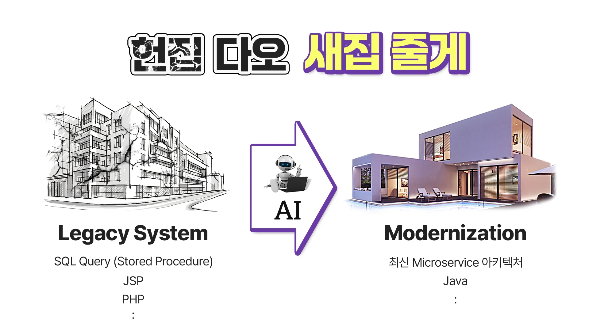
In "The Difference Between Systems That Manage Business Logic in SQL and Systems That Manage It in Domain Classes, Part 1" and
"The Difference Between Systems That Manage Business Logic in SQL and Systems That Manage It in Domain Classes, Part 2" we used a payroll calculation example to compare the Transaction Script approach using stored procedures with the approach using domain classes in Java.
Today, in Part 3, we first look at 'the advantages you gain by moving from stored procedures to a Java clean architecture.'
Benefits of moving from stored procedures to a Java clean architecture
- Improved maintainability: Stored procedures are tied to the database system, so every change requires a database specialist. This demands specific expertise during maintenance and limits accessibility. Moving the logic to a general-purpose programming language such as Java, on the other hand, lets a much broader range of developers understand and modify the system, greatly improving maintainability. This is made possible by Java's rich documentation and community support, and it increases the flexibility and accessibility of the system.
- Easier testing and debugging: Because stored procedures run inside the database, testing and debugging them is complex and difficult, whereas moving the logic to Java lets you use the wide range of testing and debugging tools available in modern development environments. Unit tests, integration tests and more are easy to implement in Java, and visual tools and logging make it fast and accurate to pinpoint problems when debugging.
- Scalability and flexibility: Code written in a general-purpose language such as Java is platform-independent and runs on a variety of operating systems and environments. It integrates easily with modern infrastructure such as cloud-based architectures, greatly improving the scalability and flexibility of the system. Stored procedures, by contrast, are tied to a specific database system, making migration or expansion to other environments difficult. This limits their ability to adapt to new technology environments such as the cloud, and leaves the system's scalability and flexibility relatively low compared with Java.
- Higher development efficiency: Java supports powerful libraries and frameworks and has a highly active worldwide developer community, giving access to a wealth of development resources and support. These factors greatly improve development speed and efficiency. Stored procedures, on the other hand, are tied to a specific database system, the libraries and tools available are limited, and the developer community is not as large as Java's. As a result they receive relatively less support during development and maintenance, which can constrain development flexibility and speed.
- Stronger stability and security: Java provides automatic memory management through garbage collection and a structured exception-handling mechanism, effectively managing memory leaks and exceptional conditions. Stored procedures rely on the database engine for memory management and have more limited exception handling, so fine-grained control is harder than in Java. In addition, Java offers strong security features through a variety of security frameworks and libraries, whereas stored procedures do not have such security features built in, limiting flexibility and extensibility from a security standpoint.
AI-driven automated conversion vs. manual conversion when moving to Java
| Manual conversion by people | AI-driven automated conversion | ||
|---|---|---|---|
| Development process | Complex and requires expert involvement | AI resolves the complexity automatically | |
| Labor cost | Higher cost from reliance on specialists | Lower labor cost through automation | |
| Maintenance | Code is hard to understand and modify | ➜ | Easy to maintain thanks to clean architecture |
| Error potential | Manual intervention can introduce errors | AI accuracy minimizes errors | |
| Collaboration efficiency | Limited communication | Stronger communication through a ubiquitous language |
As shown, the differences between AI-driven automated conversion and manual conversion when moving to Java appear in many respects. AI-driven automated conversion saves time and cost, minimizes errors and raises efficiency, whereas manual conversion requires deep understanding and experience along with additional optimization work and testing.
Legacy Modernizer
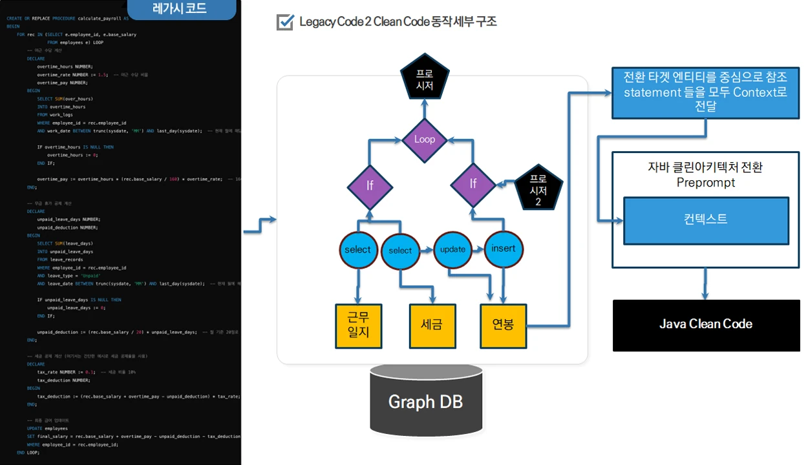
Legacy Code 2 Clean Code — detailed operating structure
The AI-driven Legacy Modernizer tool is designed to convert existing, complex stored procedures into a modern, clean Java architecture. Going beyond superficial conversion, the tool supports the transition from a shared-database procedural style to a robust object-oriented model, including structural and syntactic changes.
In the core conversion step, hard-to-read SQL code that embeds business logic is rewritten in a far more approachable form using a ubiquitous language, so domain experts and developers can collaborate on it and maintain it with ease. The result is a major gain in code comprehension and maintainability.
-
Graph visualization: The complex structure of legacy code (stored procedures) is visualized as a relational graph, making it easier to understand and refactor. By rendering the flow of stored procedures as a graph, you can clearly see how each procedure interacts with the others and how data moves between them. Developers and domain experts can quickly grasp the structure and intent of the code and refactor exactly the parts that need it. Graph visualization exposes complex dependencies visually, giving you a powerful tool for spotting and fixing problems in the code fast.
《 How RAG differs with a vector DB versus a graph DB 》
Aspect Vector database Graph database (KG) Data structure 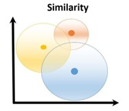
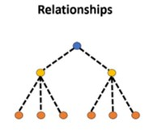
Data type Ideal for managing large volumes of unstructured data such as text, images, and audio. Well suited to structured data with complex relationships between entities. Domain fit Commonly used in applications that need a variety of ML models and data types. Highly effective for applications that demand deep, specialized knowledge of a particular domain. Explainability Less transparent than a KG; focuses on similarity scores rather than explicit paths. Provides explicit reasoning paths, giving it high explainability. Data integrity Flexible data modeling can sometimes work against strict data consistency. Maintains data integrity and consistency, which is essential for trustworthy data representation. Hybrid use cases Can be combined with a KG to handle both structured and unstructured data effectively. Can be combined with a vector database to leverage both structured knowledge and ML capabilities. Source: RAG: Vector Databases vs Knowledge Graphs? | by Ahmed Behairy | Medium
- Conversion to Java: Legacy code is converted to Java automatically using LLM AI technology. This reduces the need for manual rewrites and minimizes the chance of human error. The AI interprets and transforms complex business logic accurately into a modern, clean Java architecture that developers and domain experts can readily understand and maintain. This automated translation process saves time and cost while guaranteeing code consistency and quality.
- Result verification: A testing AI automatically generates and runs test cases, enabling a direct comparison against the original legacy code. Through these automated tests, you can confirm in real time, based on your existing data, that the application was converted correctly. This capability preserves the functional completeness of the existing system while ensuring the transition to the new architecture goes smoothly.
How to use Legacy Modernizer
Stored procedure to Java - MSA Easy Legacy Modernizer demo video
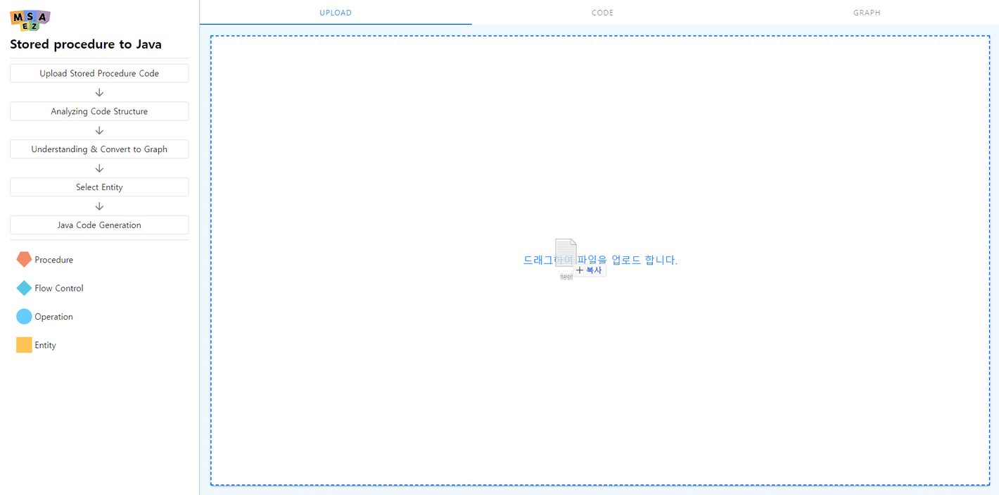
1. First, upload the stored procedure file to legacy-modernizer.
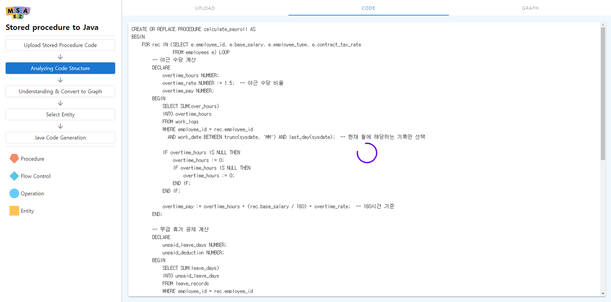
2. The contents of the uploaded stored procedure file are displayed, and the file is analyzed.
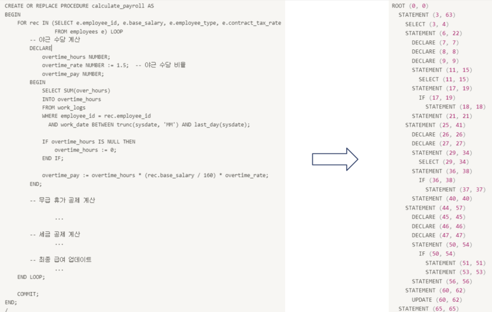
However, passing the entire stored procedure file to an LLM (Large Language Model) would exceed the maximum token limit. So when sending data to the LLM (Large Language Model), it is important to split it into semantically connected chunks that respect the token limit while preserving context. For example, each block in the code (such as an IF statement, a SELECT statement, or a DECLARE) should be passed as a semantically complete unit rather than cut off in the middle. This preserves context and helps the model understand and process the data accurately. To do this, a parsing tool such as ANTLR (ANother Tool for Language Recognition) is used to analyze the structure of the code and convert it into a tree structure.
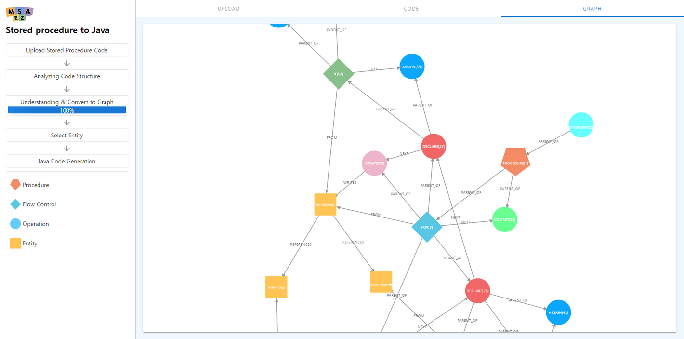
3. Next, the stored procedure you uploaded is first visualized as a graph.
The process of visualizing your stored procedure as a graph works as follows. First, based on the syntactic tree obtained from ANTLR and the stored procedure itself, Cypher queries are generated that define the nodes and relationships. These Cypher queries are executed to store the data in a graph database, and the result is then visualized as a graph. This lets you intuitively understand the structure and logic of the stored procedure.
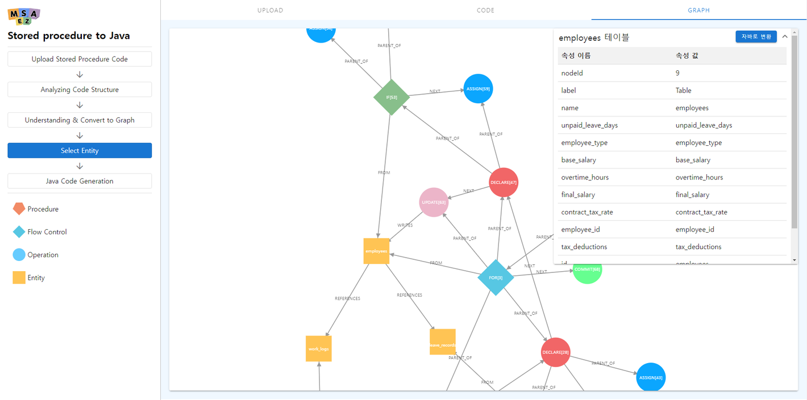
4. Click any node in the graph visualization to see the information related to that node.
For example, for a table node you can view the table's attribute information. For other kinds of nodes, you can see a summary describing what that node does in the code along with the source code of the corresponding section. This helps you gain a deeper understanding of the code's structure and the detailed role of each element through the graph.
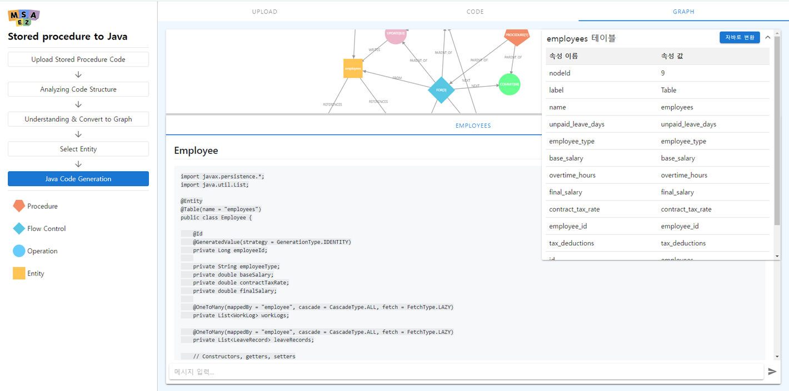
5. The core step: conversion to a Java architecture.
When you click a table node in the graph, you can convert the relationships within two levels of depth of that table into a Java architecture. This conversion expresses not only the reference relationships between tables but also each table's attributes and associated methods as Java classes and interfaces. The result is an object-oriented Java code structure derived from the database schema, providing important architectural design guidance for application development.
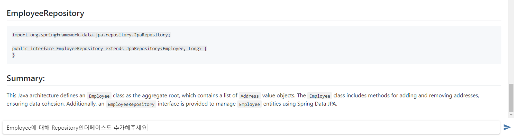
If you are not satisfied with the result, you can request changes through chat to get the output you want. For example, if you ask "Please add a Repository interface for Employee as well," a Repository interface for Employee is added and the updated result is returned. The example above shows the EmployeeRepository interface added in response to the user's request.